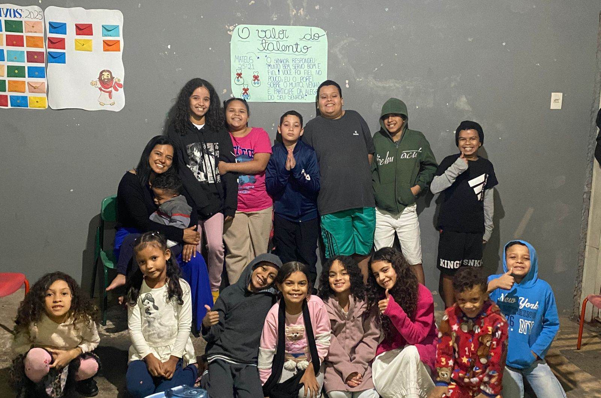
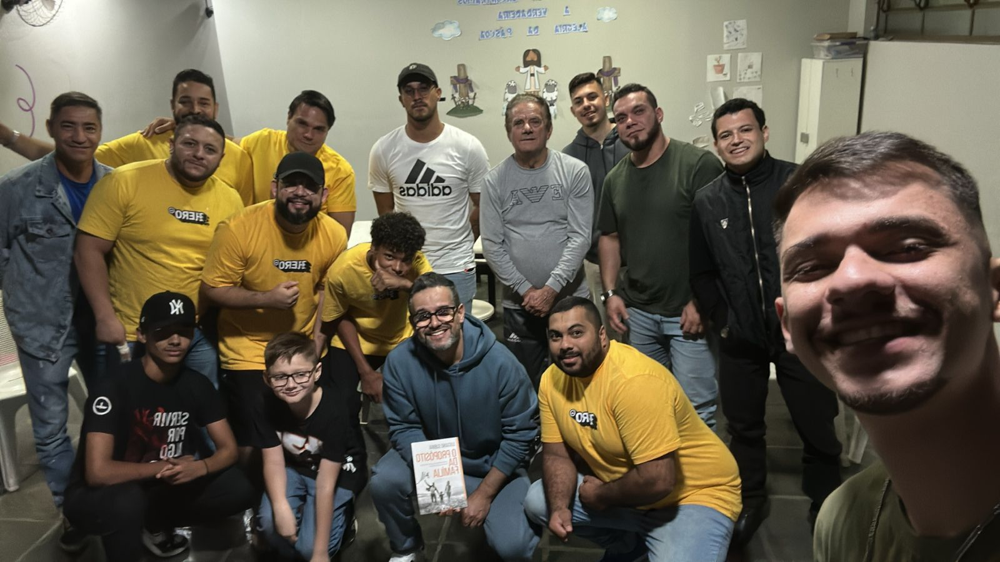

OQUE É UM GC?
Gc ( Grupo de crescimento)
Aonde nos reunimos como em comunhao pra aprender mais sobre a palavra de Deus
(GCs)

GC do Legacy (Jovens)
Um ambiente de amizade, crescimento espiritual e diversão. Acontece todas as quintas às 19h30. Aberto para todos os jovens! endereço :
Reuniões: Quartas-feiras às 20h

GC do ROCKETS (adolescente)
Traga seu Adolescente para aprender mais sobre de Cristo, endereço :
Reuniões: Quartas-feiras às 20h

GC do Kids (Criança)
Traga sua pequena Bençao, endereço :
Reuniões: Quartas-feiras às 20h

GC do Hero (Homens)
aprenda ser um Homem de Deus, endereço :
Reuniões: Quartas-feiras às 20h
GC do Shine (Mulher)
entenda como ser uma edificado de Lar, endereço :
Reuniões: Quartas-feiras às 20h